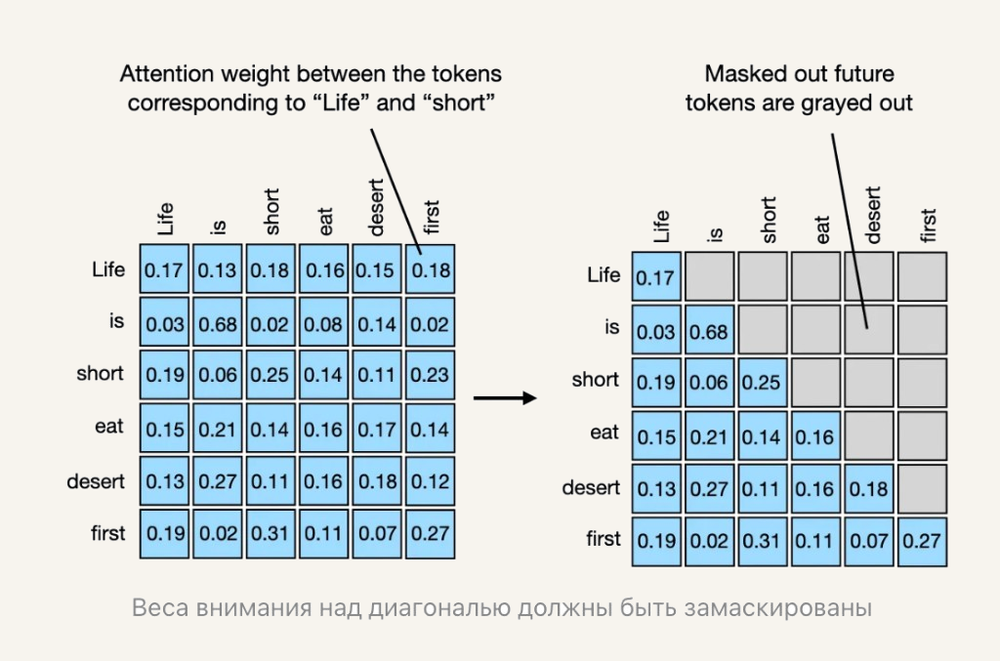

Лекция 2. Эволюция трансформеров к современным LLM-архитектурам07
Реализация причинно-следственного самовнимания для декодерных моделей

В декодере токен видит себя и прошлые позиции. Веса над диагональю замаскированы: справа будущие токены серые.